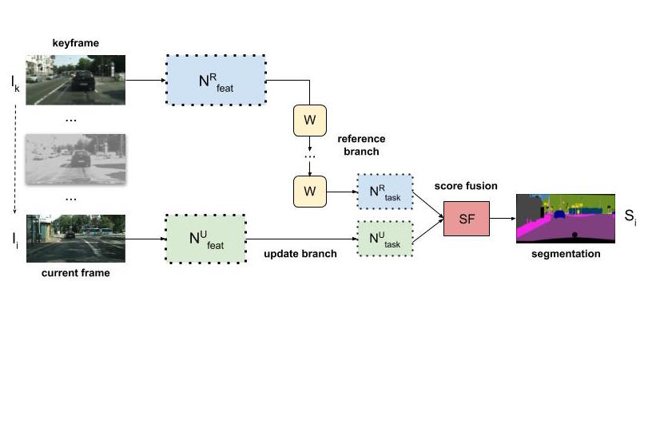
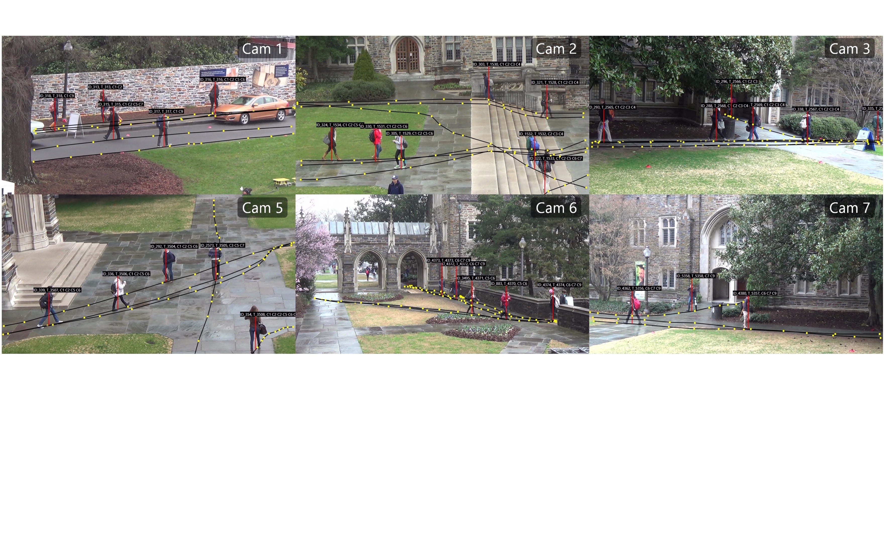
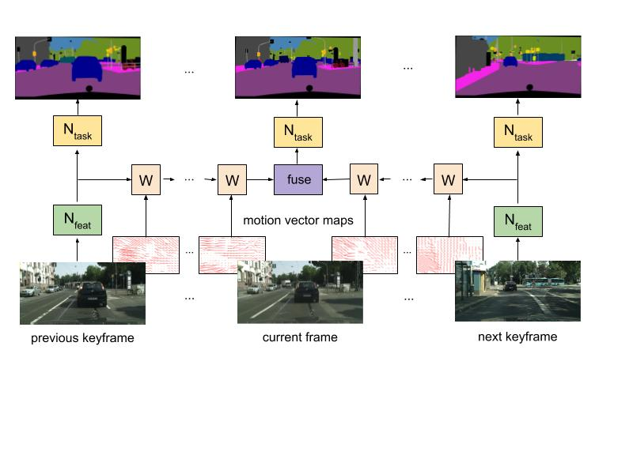
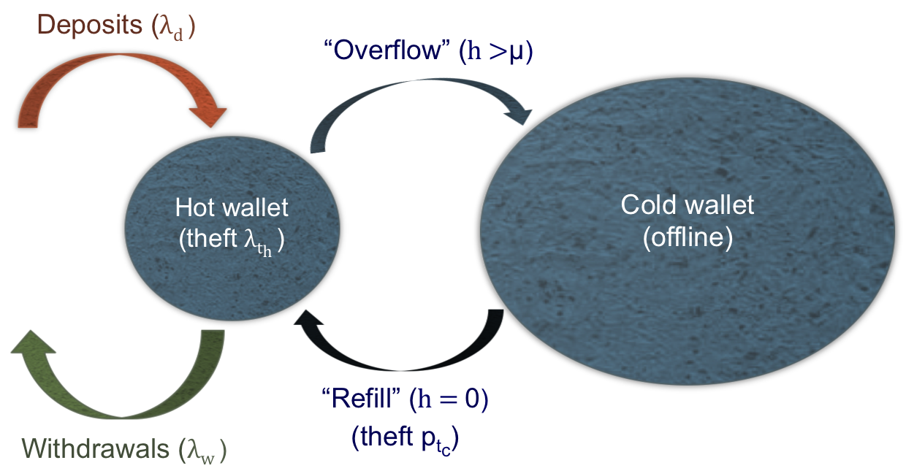

Publications
|

|
Accel: A Corrective Fusion Network for Efficient Semantic Segmentation on Video
Samvit Jain, Xin Wang, Joseph Gonzalez.
CVPR 2019 [Oral presentation]
summary | arXivWe present Accel, a novel corrective fusion network that combines (1) optical flow-based feature warping with (2) lightweight, per-frame, temporal correction to achieve state-of-the-art accuracy and throughput on video semantic segmentation.
|
|

|
Scaling Video Analytics Systems to Large Camera Deployments
Samvit Jain, Ganesh Ananthanarayanan, Junchen Jiang, Yuanchao Shu, Joseph Gonzalez
HotMobile 2019
summary | arXiv | program
We discuss the potential of spatio-temporal correlations -- content correlations between geographically proximate cameras in wide-area enterprise camera deployments -- to improve cost efficiency and inference accuracy in large-scale video analytics operations. Our template application is real-time person re-identification and tracking.
|
|

|
Fast Semantic Segmentation on Video Using Motion Vector-Based Feature Interpolation
Samvit Jain, Joseph Gonzalez
ECCV 2018 International Workshop on Video Segmentation (IWVS)
summary | arXiv | program We exploit video compression techniques (in particular, the block motion vectors in H.264 video) and feature similarity across frames to accelerate a classical image recognition task, semantic segmentation, on video.
|
|

|
Determining an Optimal Threshold on the Online Reserves of a Bitcoin Exchange
Samvit Jain, Edward Felten, Steven Goldfeder
Journal of Cybersecurity (JCS), 2018
summary | pdf | program We investigate the fundamental tradeoff between exposure to online (network-based) and offline threats faced by a Bitcoin exchange that must store Bitcoin across online and offline storage, while guaranteeing availability to customers. Parameterizing deposit, withdrawal, and theft events as Poisson processes, we are able to model the financial dynamics of the exchange, and solve for the optimal threshold on online storage.
|
|